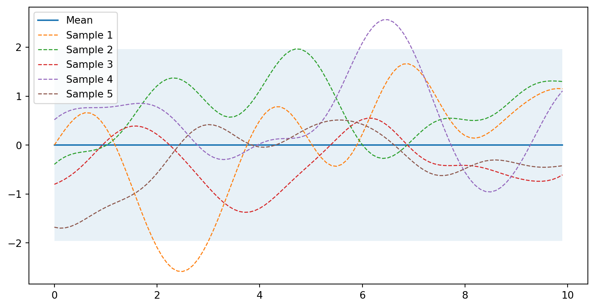
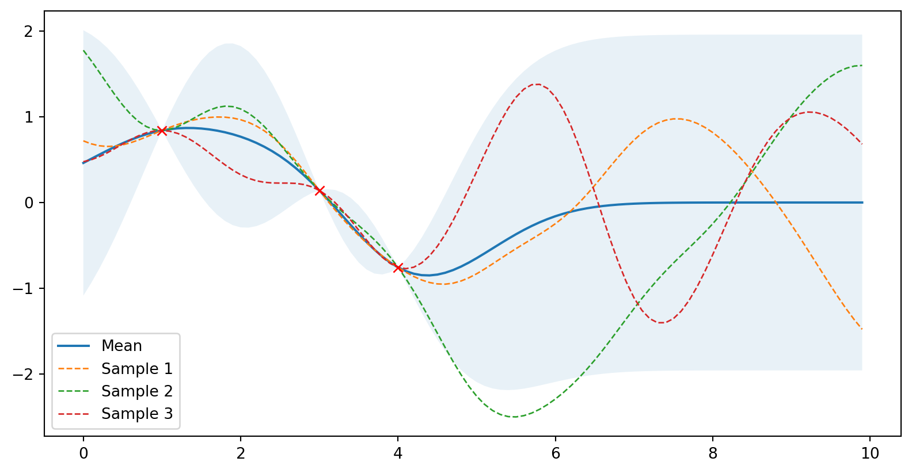
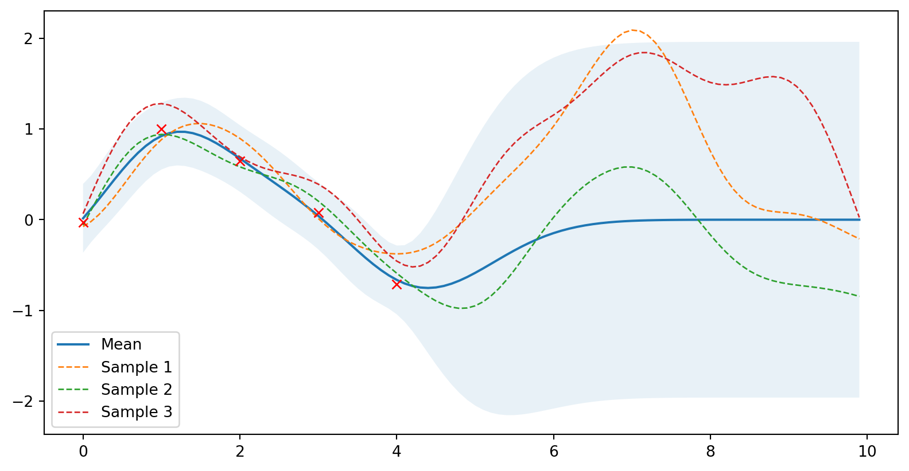
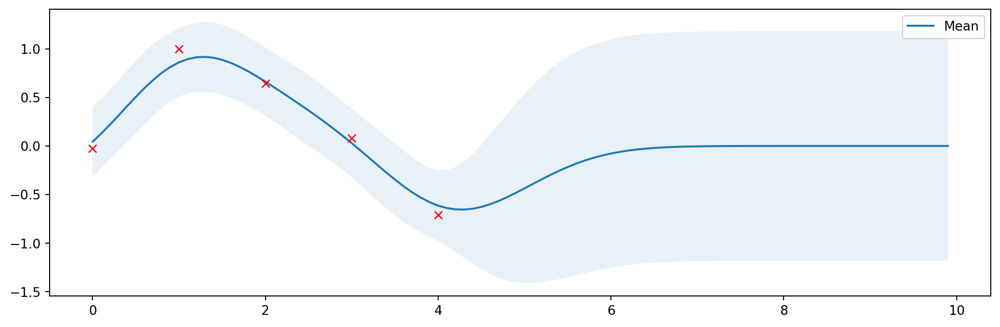
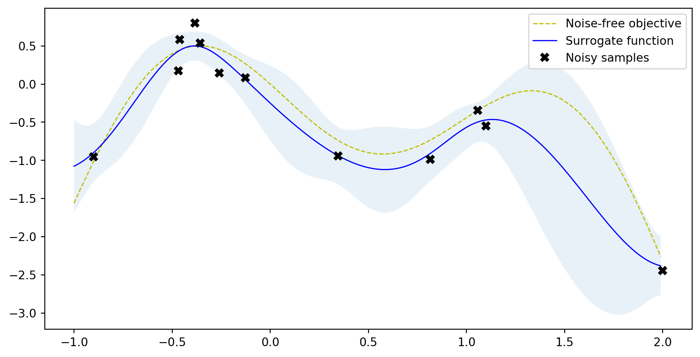

import numpy as np
def kernel(X1, X2, l=1.0, sigma=1.0):
"""
Isotropic squared exponential kernel.
Args:
X1,2: Array of m points (m x d).
X2: Array of n points (n x d).
Returns:
(m x n) matrix.
"""
sqdist = np.sum(X1**2, 1).reshape(-1, 1) + np.sum(X2**2, 1) - 2 * np.dot(X1, X2.T)
return sigma**2 * np.exp(-0.5 / l**2 * sqdist)Automatizce ve fyzice: Bayesovská optimalizace
Petr Čermák
2023-11-24
Připojte se
cermak.science/teaching/automation/lectures/07-bo/presentation.html
Statistika v kostce
Obecné pojmy - pravděpodobnostní model
Likehood funkce
- funkce věrohodnosti
- \(\mathcal{L}(\theta; D)\)
- vyjadřuje pravděpodobnost, že by daná sada parametrů \(\theta\) generovala pozorovaná data \(D\).
Náhodný proces
- výsledkem je funkce
Modely
- parametrické (konečný/malý počet parametrů)
- non-parametric (nekonečně/hodně) parametrů
Obecné pojmy
Metoda maximální věrohodnosti
- MLE (Maximum likelihood estimation)
- hledám parametry modelu, které vygenerují naměřená data s největší pravděpodobností
\[ \hat{\theta}_{\text{MLE}} = \arg \max_{\theta} \mathcal{L}(\theta; D) \]
Maximální aposteriorní odhad
- MAP (Maximum a Posteriori Estimation)
- Parametry nejsou náhodné, známe jejich distribuci
- Kombinace likehood funkce a apriorní informace o parametrech
\[ P(\theta | D) = \frac{P(D | \theta) \cdot P(\theta)}{P(D)} \]
\[ \hat{\theta}_{\text{MAP}} = \arg \max_{\theta} P(\theta | D) \]
Gaussovské procesy
Gaussovský proces
- model náhodného procesu
- neparametrický
- hodnoty jsou náhodné proměné, vzájemně korelované
- popisuje ho střední hodnota a kovarianční funkce (určuje hladkost)
- pro dva blízké body \(x_j\) a \(x_i\) platí, že jejich \(f(x_n\))$ jsou také blízké
- za pomoci tréninkového datasetu umí predikovat další hodnoty
Příklad jádra (kovarianční fce): RBF
RBF (Radial Basis Function, jádro exponentu kvadratického) \[ \kappa(\mathbf{x}_i,\mathbf{x}_j) = \sigma^2 \exp\left(-\frac{\|\mathbf{x}_i - \mathbf{x}_j\|^2}{2l^2}\right) \]
kde \(l\) ovlivňuje jak rychle korelace klesá a \(\sigma\) určuje škálování jádra.
Prior (nevíme nic)
from helper import plot_gp
# Vygeneruji body (konečný počet)
X = np.arange(0, 10, 0.1).reshape(-1, 1) #počet sloupců dopočítá
mu = np.zeros(X.shape) # střední hodnota
cov = kernel(X, X) # spočtu kovarianci (nenormovaná korelace)
# Vygeneruji 5 funkcí jako výsledek náhodného gaussovského procesu
samples = np.random.multivariate_normal(mu.ravel(), cov, 5)
# Vykreslí střední hodnotu, oblast nejistoty a funkce
plot_gp(mu, cov, X, samples=samples)
Posterior
from numpy.linalg import inv
def posterior(X, X_train, Y_train, l=1.0, sigma=1.0, sigma_y=1e-8):
"""
Spočítá novou střední hodnotu a kovarianci při znalosti train dat
Args:
X: osa x
X_train, Y_train: známá data (m x 1)
l, sigma: Parametry jádra
sigma_y: šum
Returns:
Posterior střední hodnota (n x d) a kovariance (n x n).
"""
K = kernel(X_train, X_train, l, sigma) + sigma_y**2 * np.eye(len(X_train)) # jádro s šumem
K_s = kernel(X_train, X, l, sigma)
K_ss = kernel(X, X, l, sigma) + 1e-8 * np.eye(len(X))
# Equation (7)
mu_s = K_s.T.dot(inv(K)).dot(Y_train)
# Equation (8)
cov_s = K_ss - K_s.T.dot(inv(K)).dot(K_s)
return mu_s, cov_s\[ \mathbf{\mu_*} = \mathbf{K}_*^T \mathbf{K}_y^{-1} \mathbf{y} \] \[ \mathbf{\Sigma_*} = \mathbf{K}_{**} - \mathbf{K}_*^T \mathbf{K}_y^{-1} \mathbf{K}_* \]
Odvození zde.
Zadáme data (bez šumu)
# Zadáme data
X_train = np.array([1, 3, 4]).reshape(-1, 1)
Y_train = np.sin(X_train)
# Spočteme novou (posterior) střední hodnotu a kovarianci
mu_s, cov_s = posterior(X, X_train, Y_train)
samples = np.random.multivariate_normal(mu_s.ravel(), cov_s, 3)
plot_gp(mu_s, cov_s, X, X_train=X_train, Y_train=Y_train, samples=samples)
To není dokonalé - ta data nejsou z principu přesná.
Zadáme data (se šumem)
# Zašuměná data
noise = 0.2
X_train = np.arange(0, 5, 1).reshape(-1, 1)
Y_train = np.sin(X_train) + noise * np.random.randn(*X_train.shape)
mu_s, cov_s = posterior(X, X_train, Y_train, sigma_y=noise)
samples = np.random.multivariate_normal(mu_s.ravel(), cov_s, 3)
plot_gp(mu_s, cov_s, X, X_train=X_train, Y_train=Y_train, samples=samples)
Fajn, jak nastavit ty parametry?
Vliv parametrů
Ukaž kód
import matplotlib.pyplot as plt
params = [
(0.3, 1.0, 0.2),
(3.0, 1.0, 0.2),
(1.0, 0.3, 0.2),
(1.0, 3.0, 0.2),
(1.0, 1.0, 0.05),
(1.0, 1.0, 1.5),
]
plt.figure(figsize=(13, 2.5))
for i, (l, sigma, sigma_y) in enumerate(params):
mu_s, cov_s = posterior(X, X_train, Y_train, l=l,
sigma=sigma,
sigma_y=sigma_y)
plt.subplot(2, 3, i + 1)
plt.subplots_adjust(top=2)
plt.title(f'l = {l}, sigma = {sigma}, sigma_y = {sigma_y}')
plot_gp(mu_s, cov_s, X, X_train=X_train, Y_train=Y_train)Optimální parametry
Lze nalézt optimální parametry
\[ \log p(\mathbf{y} \lvert \mathbf{X}) = \log \mathcal{N}(\mathbf{y} \lvert \mathbf{0},\mathbf{K}_y) = -\frac{1}{2} \mathbf{y}^T \mathbf{K}_y^{-1} \mathbf{y} -\frac{1}{2} \log \begin{vmatrix}\mathbf{K}_y\end{vmatrix} -\frac{N}{2} \log(2\pi) \]
Kód zde
from numpy.linalg import cholesky, det
from scipy.linalg import solve_triangular
from scipy.optimize import minimize
def nll_fn(X_train, Y_train, noise, naive=True):
"""
Returns a function that computes the negative log marginal
likelihood for training data X_train and Y_train and given
noise level.
Args:
X_train: training locations (m x d).
Y_train: training targets (m x 1).
noise: known noise level of Y_train.
naive: if True use a naive implementation of Eq. (11), if
False use a numerically more stable implementation.
Returns:
Minimization objective.
"""
Y_train = Y_train.ravel()
def nll_naive(theta):
# Naive implementation of Eq. (11). Works well for the examples
# in this article but is numerically less stable compared to
# the implementation in nll_stable below.
K = kernel(X_train, X_train, l=theta[0], sigma=theta[1]) + \
noise**2 * np.eye(len(X_train))
return 0.5 * np.log(det(K)) + \
0.5 * Y_train.dot(inv(K).dot(Y_train)) + \
0.5 * len(X_train) * np.log(2*np.pi)
def nll_stable(theta):
# Numerically more stable implementation of Eq. (11) as described
# in http://www.gaussianprocess.org/gpml/chapters/RW2.pdf, Section
# 2.2, Algorithm 2.1.
K = kernel(X_train, X_train, l=theta[0], sigma=theta[1]) + \
noise**2 * np.eye(len(X_train))
L = cholesky(K)
S1 = solve_triangular(L, Y_train, lower=True)
S2 = solve_triangular(L.T, S1, lower=False)
return np.sum(np.log(np.diagonal(L))) + \
0.5 * Y_train.dot(S2) + \
0.5 * len(X_train) * np.log(2*np.pi)
if naive:
return nll_naive
else:
return nll_stable
# Minimize the negative log-likelihood w.r.t. parameters l and sigma_f.
# We should actually run the minimization several times with different
# initializations to avoid local minima but this is skipped here for
# simplicity.
res = minimize(nll_fn(X_train, Y_train, noise), [1, 1],
bounds=((1e-5, None), (1e-5, None)),
method='L-BFGS-B')
# Store the optimization results in global variables so that we can
# compare it later with the results from other implementations.
l_opt, sigma_f_opt = res.x
# Compute posterior mean and covariance with optimized kernel parameters and plot the results
mu_s, cov_s = posterior(X, X_train, Y_train, l=l_opt, sigma=sigma_f_opt, sigma_y=noise)
plt.figure(figsize=(13, 4))
plot_gp(mu_s, cov_s, X, X_train=X_train, Y_train=Y_train)
Více rozměrů
Kód zde
from helper import plot_gp_2D
noise_2D = 0.1
rx, ry = np.arange(-5, 5, 0.3), np.arange(-5, 5, 0.3)
gx, gy = np.meshgrid(rx, rx)
X_2D = np.c_[gx.ravel(), gy.ravel()]
X_2D_train = np.random.uniform(-4, 4, (100, 2))
Y_2D_train = np.sin(0.5 * np.linalg.norm(X_2D_train, axis=1)) + \
noise_2D * np.random.randn(len(X_2D_train))
plt.figure(figsize=(14,7))
mu_s, _ = posterior(X_2D, X_2D_train, Y_2D_train, sigma_y=noise_2D)
plot_gp_2D(gx, gy, mu_s, X_2D_train, Y_2D_train,
f'Before parameter optimization: l={1.00} sigma_f={1.00}', 1)
res = minimize(nll_fn(X_2D_train, Y_2D_train, noise_2D), [1, 1],
bounds=((1e-5, None), (1e-5, None)),
method='L-BFGS-B')
mu_s, _ = posterior(X_2D, X_2D_train, Y_2D_train, *res.x, sigma_y=noise_2D)
plot_gp_2D(gx, gy, mu_s, X_2D_train, Y_2D_train,
f'After parameter optimization: l={res.x[0]:.2f} sigma_f={res.x[1]:.2f}', 2)Jsou na to knihovny
Scikit-learn
GaussianProcessRegressorvytváří posterior data (“fituje hodnoty”)- Připravená jádra
from sklearn.gaussian_process import GaussianProcessRegressor
from sklearn.gaussian_process.kernels import ConstantKernel, RBF
rbf = ConstantKernel(1.0) * RBF(length_scale=1.0)
gpr = GaussianProcessRegressor(kernel=rbf, alpha=noise**2)
# Použiju stará data
gpr.fit(X_train, Y_train)
# Výpočet posterior parametrů
mu_s, cov_s = gpr.predict(X, return_cov=True)
# Optimalizované parametry Gausse
l = gpr.kernel_.k2.get_params()['length_scale']
sigma = np.sqrt(gpr.kernel_.k1.get_params()['constant_value'])
plot_gp(mu_s, cov_s, X, X_train=X_train, Y_train=Y_train)Jsou na to knihovny

Knihovna GPy
- Vyvíjeno Sheffield machine learning group.
- Hezčí grafy
import GPy
rbf = GPy.kern.RBF(input_dim=1, variance=1.0, lengthscale=1.0)
gpr = GPy.models.GPRegression(X_train, Y_train, rbf)
# Zafixovat šum
gpr.Gaussian_noise.variance = noise**2
gpr.Gaussian_noise.variance.fix()
# Optimalizovat parametry
gpr.optimize()
# Výsledky
l = gpr.rbf.lengthscale.values[0]
sigma = np.sqrt(gpr.rbf.variance.values[0])
# Zobraz parametry a graf
display(gpr)Knihovna GPy
Model: GP regression
Objective: 4.574426814234429
Number of Parameters: 3
Number of Optimization Parameters: 2
Updates: True
| GP_regression. | value | constraints | priors |
| rbf.variance | 0.4603902657029332 | +ve | |
| rbf.lengthscale | 0.943950297462963 | +ve | |
| Gaussian_noise.variance | 0.04000000000000001 | +ve fixed |
Knihovna GPy
Bayesovská optimalizace
Co optimalizovat?
Funkce typu “black-box”
- neznáme jaká funkce to je
- nevíme její derivace
- měření v bodě –> zašuměná odpověď
Co když měření trvá dlouho?
- najít minimum za pomocí nejmenšího počtu měření
–> Bayesovská optimalizace! Potřebujeme:
- Náhradní (Surrogate) model (GP!!)
- Akviziční funkce - vymyslí na základě modelu, kde dále měřit
Akviziční funkce
- hledá kompromis mezi
- průzkumem (exploration) - měřit tam, kde nic nevíme
- vytěžováním (exploitation) - měřit tom, kde se odhaduje minimum/maximum
- používané funkce:
- “maximum probability of improvement” (MPI)
- “upper confidence bound” (UCB)
- “expected improvement” (EI)
\[ \mathrm{EI}(\mathbf{x}) = \mathbb{E}\max(f(\mathbf{x}) - \mathbf{y}^+, 0) \]
kde \(\mathbf{y}\) je zatím nejlepší hodnota, \(f(\mathbf{x})\) je náš gp model a \(\mathbb{E}\) značí očekávání.
Scikit-optimize
import numpy as np
from sklearn.base import clone
from skopt import gp_minimize
from skopt.learning import GaussianProcessRegressor
from skopt.learning.gaussian_process.kernels import ConstantKernel, Matern
from helper import plot_approximation, plot_acquisition
bounds = np.array([[-1.0, 2.0]])
noise = 0.2
def f(X, noise=noise):
return -np.sin(3*X) - X**2 + 0.7*X + noise * np.random.randn(*X.shape)
X_init = np.array([[-0.9], [1.1]])
Y_init = f(X_init)
# pro plotování:
X = np.arange(bounds[:, 0], bounds[:, 1], 0.01).reshape(-1, 1)
Y = f(X,0)
# Definice jádra
m52 = ConstantKernel(1.0) * Matern(length_scale=1.0, nu=2.5)
gpr = GaussianProcessRegressor(kernel=m52, alpha=noise**2)
r = gp_minimize(lambda x: -f(np.array(x))[0],
bounds.tolist(),
base_estimator=gpr,
acq_func='EI', # expected improvement
xi=0.01, # exploitation-exploration trade-off
n_calls=10, # number of iterations
n_random_starts=0, # initial samples are provided
x0=X_init.tolist(), # initial samples
y0=-Y_init.ravel())
# Fit GP model to samples for plotting results
gpr.fit(r.x_iters, -r.func_vals)
# Plot the fitted model and the noisy samples
plot_approximation(gpr, X, Y, r.x_iters, -r.func_vals, show_legend=True)Scikit-optimize

GPyOpt
import GPy
import GPyOpt
from GPyOpt.methods import BayesianOptimization
kernel = GPy.kern.Matern52(input_dim=1, variance=1.0, lengthscale=1.0)
bds = [{'name': 'X', 'type': 'continuous', 'domain': bounds.ravel()}]
optimizer = BayesianOptimization(f=f,
domain=bds,
model_type='GP',
kernel=kernel,
acquisition_type ='EI',
acquisition_jitter = 0.01,
X=X_init,
Y=-Y_init,
noise_var = noise**2,
exact_feval=False,
normalize_Y=False,
maximize=True)
optimizer.run_optimization(max_iter=10)
optimizer.plot_acquisition()